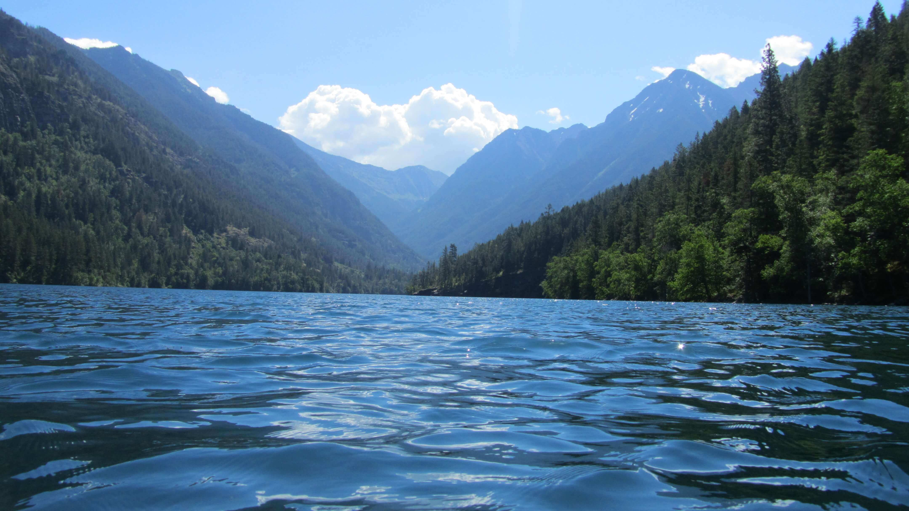

The Long Way to San Diego
Tomb Raiders
August 12, 2017
by Nick
It was hot and muggy when we landed in Siem Riep. The hostel Lara and Iwere staying at had sent a tuktuk to pick us up. The driver introduced himself as Bunnat, 32 years old and a local to the city. When we arrived at the hostel he unloaded our backpacks and told us to ask for him at the reception if we were going to see any temples the following day. He seemed sweet and had a big, contagious smile so Lara took down his phone number we went inside to check in. The hostel was huuuge, it had an indoor pool, a cinema and a bar. We ran up, all excited to our dorm and were delighted to find out it had an A/C and a private bathroom. If you’ve ever stayed in a hostel before I’m sure you can imagine how luxurious we felt.
The next morning we sat down at breakfast and made a list of everything we wanted to see. Siem Reap has a lot to offer and we didn’t have much time. We decided that we’d see the less recognized temples first, what they call the “big circuit”. The first issue to address was what we were going to wear. Because these were religious temples, a certain amount of modesty was required but I was traveling on a backpack packed for the Caribbean and Hawaii (or ya know, just my regular clothes). Lara on the other hand, came completely prepared with clothes that were both modest and perfectly matched the coloring of the temples. Whatever LAra. I decided on a knee length skirt and a crop top I could pull down over my bellybutton if needed. Bunnat was waiting for us outside and we set off in the tuktuk, weaving our way through traffic while haphazardly spreading sunscreen on our bare arms. We arrived at the first temple, which would turn out to be the least impressive, and were frankly beyond impressed. The carvings and writings on the wall were almost perfectly intact. Half-women, half-goddesses danced in unison as we walked through the temple halls while murals engulfed in foliage told the stories of ancient Khmer wars. Every temple we visited after that had more, unique attributes that took our breath away. Temples as large as cities sprawled out, slowly deteriorating and becoming one with the jungle. Bunnat suggest we watch the sunset from the top of a nearby mountain where a popular temple stood and he urged us to get there early or we would miss it. This particular temple could only hold 300 people at a time so we could only go up once someone came down. We stood in line, hot and impatient, moving forward slowly enough that we became convinced we wouldn’t make it up in time. Luckily, two people came down about five minutes before the sun was due to set and we ran up the stairs only to find that the side of the temple that faced west was completely crowded with tourists and their tripods. Feeling defeated, we sat off to the side in some shade and watched the sunset from a distance, grateful for a little peace and quite.
The next morning we were up at 4:30AM to see the famous sunrise over Angkor Wat. We’d arranged for a tour guide to take us through the “small circuit” which would feature Angkor Wat, the most well known temple in Siem Reap, and a couple other must-sees. As we pulled up though, we were caught in traffic behind hundreds of other tuktuks, on their way to see the same sunrise. Our guide, also named Bunna, led us to the reflecting pools by the temple and again, it was completely congested with tourists and their shitty tripods. Lara and I watched the sunrise from a distance, peeking over other people heads, as the temple of Angkor Wat was mirrored onto the twin lakes. The spectacle itself didn’t last more than 20 minutes and soon enough people were grumbling, getting impatient and leaving. The sky was overcast and we couldn’t see much either so we found Bunna and walked into the temple.
Bunna spoke english well, was friendly and accommodating but the absolute opposite of charismatic. As he gave us a tour of the temple, explaining the history of Cambodia through the architecture and artwork of Angkor Wat, it was as dry as if he’d memorized the paragraphs straight out of a high-school textbook. Lara and I listened as best as we could, concealing our yawns and quickly losing interest in what we’d been so mesmerized by the day before. When it started pouring rain at the second temple we were more than grateful for an excuse to cut the tour short. We had bought a three day pass so we decided we’d come back alone the next day. On the ride back to the hostel Bunna (the guide) recommended a restaurant he thought we might like that featured a live performance of local traditional dancing. A mixture of guilt and curiosity prompted us to agree and he stopped there on the way home to make us a reservation. He asked us to pay upfront, $15, and he walked into the restaurant as the realization set in that something sketchy was going on. We felt like it was too late to say anything so when he came back and told us he’d gotten us the best seats in the house, we thanked him politely. As soon as we got back to the hostel we pulled up the restaurant’s Trip Advisor page and scrolled from poor review to worse review until the only reason we had to go was that we’d already paid for it. We dragged ourselves to the restaurant consoling each other about the fact that we’d fallen into a tourist trap but whatever, it was an all you can eat buffet and boy were we gonna make the most of it! Our hearts sunk immediately as we walked in and it was absolutely packed with literally hundreds of tourists. The lines for the buffet wrapped around each other as people picked through the food, choosing only what looked mildly edible. Fuck it, we were already there right? We picked up a couple plates and got behind the lines that moved ever-so-slowly until it had been about 20 minutes and we hadn’t gotten any food yet. Desperation was setting in and when we finally got to the buffet table we were eating as soon as we’d set something down on our plates. Ok, this is bad, this is cold, this looks gross, that looks ok, we thought as we walked down filling our plates with everything from pizza to spring rolls. We sat down and laughed in misery for about five minutes before we started eating. Eventually I was only eating bread with butter and Lara was eating coconut cake. The seat we’d gotten, which was supposedly the best in the house, was in the back in the far right corner. The thought of waiting in line again just to get another helping of lukewarm food was so painful that we decided to just leave before the performance even began. Relief washed over us as we stepped out into the cool air and we stopped for a quick beer before heading home.
We spent the next day going from temple to temple with Bunnat, our patient tuktuk driver, taking as much time as we wanted and googling anything we were curious about. We were genuinely surprised to find that the temples in the small circuit could somehow be even more beautiful than the ones we’d seen before. They seemed almost never-ending, with secret hallways, gardens and pathways that threatened to get you lost if you didn’t pay close attention. Parts of the walls were swallowed up by ancient tree’s bodies whose roots creeped out into the cracks on the floor. We walked along in silence, reaching out to press our hands against the cool stone walls, until a large group of Chinese tourists came bustling in and broke us out of our trance. Suddenly exhausted, we went back to the hostel for a nap.

Siem Reap is a city centered around tourism. In the main tourist center there’s a street, about a block long, lined with bars for tourists called Pub Street. We hadn’t properly gone out in a bit so we decided to check it out that night. After stopping for a beer here and there, a loud, drunk, Irish girl approached us. Apparently if we took the flyer she was trying to hand us to a bar around the corner they would give us each two free shots. Her friend chimed in and said if we took his flyer to the bar next door to that we’d get a couple free shots too. I’ll admit it took a little convincing on my part but soon enough Lara and I were pounding shots of rice wine before embarking on an organized pub crawl. We went along with a large group of people from bar to bar, playing drinking games and dancing until suddenly Lara and I were on our own. We had gotten lost from the group somehow but we were still on Pub Street where music poured out from all the bars, streets vendors called out to us and the string lights above us glittered like stars. A local delicacy in Cambodia is fried tarantula and I think I’d like to try everything once so when we came upon a late-night street cart selling them for $1/piece I decided it was the perfect time to try something new. Lara pulled her phone out fast as lightening to capture the moment and I’m glad she did cause I can’t say I would have remembered it the next day.

We woke up late but happy the next morning, neither of us hungover. It was our last day in Siem Reap and we were free to do whatever we wanted. A couple days before, in one of the temples, Lara overheard some people talking about a nearby floating village. According to the receptionist it was basically an extensive boat ride, which was convincing enough for us. Bunnat was nowhere to be found that day and it felt like a small betrayal to ride with someone else but our new tuktuk driver was just as nice. The drive was long but we enjoyed it, driving through more rural parts of Cambodia, seeing the small farm villages where people were laying out their harvests to dry in the afternoon sun. We arrived at a river bed where we were directed onto a large, blue boat. Our captain wore a straw hat and spoke no english at all which was all well and good considering we just had to look outside. First he drove us through a large mangrove where trees and plants grew out of the water. Then we started seeing little houses, one by one popping up in the horizon, on long wooden stilts. They stood out, about 30ft in the air, to the left and right of the river which served as a type of avenue for the town. Some were pink, some blue, yellow, green, and every single one had its own garden growing on floating platforms. If you’ve ever seen the movie Water World, you can imagine what I’m talking about. Every aspect of a city existed there but it was all built on a river. Naked children swam in the water while their neighbors threw a fishing net out, little girls rowed to school in their uniforms, there were even churches and pagodas standing there on their long, spidery legs. It looked like a perfect utopia. At the end of the tour, we were so hyped up that we spent the whole ride home daydreaming about what life would be like if we lived in the water village.
We’d both loved Cambodia so much that we sat at the airport brooding, trying to think how soon we could come back. For me, sometime next year. For Lara, who plans on starting a business, it might be awhile longer. Don’t worry Larz I’ll send you a postcard!